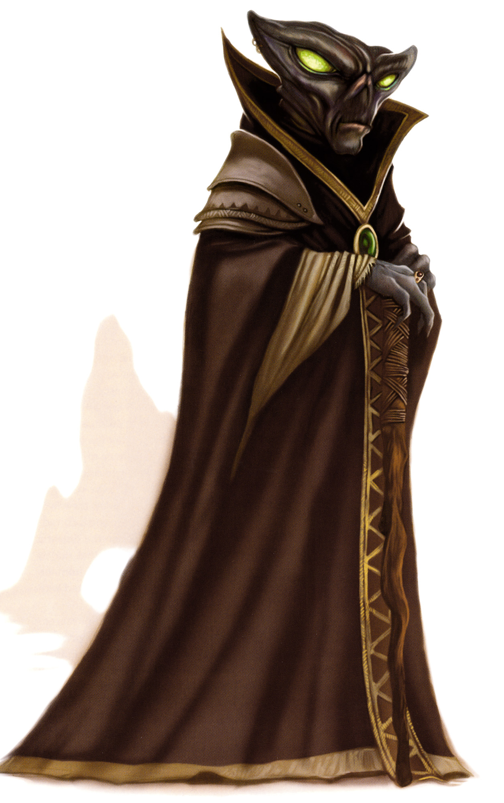

Arcona
Special Abilities: Arcona begin the game with one rank in Vigilance. They still may not train Vigilance above rank 2 during character creation. When making skill checks, Arcona may remove ■ imposed due to arid or hot environmental conditions.
Mood Readers: Arcona add [1 Advantage] to any Charm or Negotiation checks they make.
The Arcona are slim-framed reptilian humanoids with clawed hands and feet. They have compound eyes, which are large, green, and luminous. Their hairless, scaleless skin has a wood-like texture, and green, brown, or near-black in color. The Arconan head-shape is distinctive, akin to an inverted triangle, and tapers into the neck, giving them a snakelike appearance.
The Arcona rely on ammonia supplements while away from their homeworld of Cona, they have poor eyesight, and their claws developed for digging rather than combat. However, they are hardier than they appear. Cona is a dangerous world, so the Arcona are used to surviving against the odds. Their vigilance and adaptability compensate for any physical weakness. They are strong-willed, effective team players, and always alert for danger.
Family is of the utmost importance to the Arcona, and they have a strong sense of community. They often travel in groups, and their wanderlust takes these groups all over the galaxy. A peaceful and composed species, the Arcona are welcome residents on many worlds. Their powers of observation combined with their natural community spirit facilitate social interactions with other species.
The Arcona come from the hot, dry planet of Cona, where the blistering temperatures stretch from pole to pole and remain unchanged throughout the year. While they do survive in cooler climates, they show a preference for a temperature similar to that of their homeworld.
The protuberance between an Arcona's eyes is an incredibly sensitive infrared sensory organ, able to detect minute changes in the heat signatures of other beings. The Arcona smell via their tongues, which is why they often expose this slender appendage to the air in a flicking gesture that some other species might find annoying or even insulting. Working in concert, these senses are exact enough to discern moods and emotions in other species.
The atmosphere on Cona contains high concentrations of ammonia vapor. Ammonia produces enzymes in the Arconan body that are necessary for their survival. As a result, the Arcona are dependent upon the presence of ammonia, and when traveling offworld must take ammonia supplements. These supplements must be ingested in roughly the same quantities as a human may need vitamin supplements, and an Arconan can survive for long periods without them (though this can have long term health effects).
The Arcona have a sense of community so strong that they think of themselves in the collective sense. They consider raising a family to be both a duty and a privilege. The Arcona expect each member of society to put the good of his community before his own, and in most cases he does so. On their homeworld, the Arcona live in family-orientated nests, clustered around a Grand Nest where the Nest Leader oversees communal decisions. In families, the males are the primary caregivers, since the females of the species are, by Arconan standards, too flighty and unreliable.
Any Arcona who travels alone, for whatever reason, faces a period of adjustment as he adapts to life away from his hive-like community. Fortunately, the Arcona are ready and able to adapt to survive, as they have proven time and again.
The Arconan homeworld of Cona lies within the Inner Rim. As it orbits a blue star, Teke Ro, Cona is as hot and dry as any desert planet. It is abundant in vegetation that leaches oxygen and ammonia from the surrounding environment, breaking it down to create water. This phenomenon is essential to the survival of the Arcona. The atmosphere of Cona consists of nitrogen, hydrogen, and high levels of ammonia. Most species require a breathing aid to visit the surface, and even then the stink of ammonia is prevalent.
Cona is also rich in minerals and metals, which has been a mixed blessing for its inhabitants. These resources attracted prospectors and traders who originally exchanged water for mining rights, but then discovered the Arconan susceptibility to sodium chloride addiction. This compound acts as a hallucinogen to the Arcona, and addiction is ultimately fatal. Unfortunately, traders found it easier and cheaper to transport than water, so they imported it, putting the whole of Arconan society at risk. Swift intervention by the Republic and the Arconan government became necessary to prevent a complete breakdown of society.
The Arcona are more practical than proud. Offworld, many teach their children Basic first, even before their own language of Arconese. While most adult Arcona speak both fluently, their snake-like tongues add a hissing resonance to their speech. They also struggle sometimes with personal pronouns, using "we" rather than "I." This reflects their community-based outlook, rather than grammatical inaccuracy.
The Arcona travel extensively, driven by an innate curiosity and love of discovery. They have spread across the galaxy, often traveling in large family groups. However, since the trouble caused by traders visiting Cona, they have become more wary of other species and fearful of exploitation.
In general, Arcona count restraint among their virtues, but sodium chloride brings out the worst in them. Often referred to simply as "salt," this compound is the one weakness of an otherwise strong-willed species. The biology of the Arcona predisposes them to crave it. Salt consumption causes vibrant hallucinations as well as irreparable damage to the addict's body, and is ultimately fatal.
The Arconan weakness for salt is common knowledge. The golden eyes and unruly behavior of addicts makes them easy to identify. Their addiction makes them easy to manipulate, and ruthless crime lords employ addicts as expendable underlings. For an Arcona, salt is more potent than any spice, and an addict requires up to 25 grams daily to avoid withdrawal. Since salt is common throughout much of the galaxy, trading in salt is only lucrative for smugglers willing to deal illegally on Cona.This is a risky business, as salt traders caught on Cona lose more than just their cargo. Arcona who are not already addicts often react vehemently if offered salt, as this hated substance has caused so much trouble on their homeworld.
Salt only affects an Arcona if the salt is relatively pure, so an Arcona can consume salted foods by mistake and not risk any ill effects. If he consumes at least two to three grams of pure salt, he is disoriented for the remainder of the current encounter, and the following encounter. He must also make a Hard (♦♦♦) Discipline check if he fails, he gains 2 Addiction Obligation, if he did not already have an Addiction Obligation. An addicted Arcona's eyes change to a reflective, golden hue. If the Arcona loses his Addiction Obligation, his eyes return to their natural green.